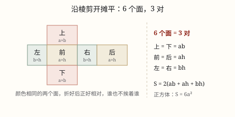

长方体和正方体的表面积
表面积是 6 个面的面积之和。长方体相对的面完全相同，所以 S = 2(ab + ah + bh)；正方体 S = 6a^2。
| 所属主题 | 立体图形 |
|---|---|
| 所属模块 | 图形与几何 |
| 课标学段 | 第三学段（5~6年级） |
| 前置知识 | 长方形和正方形的面积 |
| 核心素养 | 空间观念几何直观量感 |
教材定位
人民教育出版社《2024年版》
对应五下第 4 单元「长方体和正方体」：表面积。
课标要求
| 图形与几何·图形的认识与测量 | 认识长方体、正方体和圆柱，了解这些图形的展开图，探索并掌握这些图形的体积和表面积的计算公式，认识圆锥并探索其体积的计算公式，能用这些公式解决简单的实际问题。 印刷第 33 页 行为动词：掌握 |
|---|---|
| 图形与几何·图形的认识与测量 | 在图形认识与测量的过程中，进一步形成量感、空间观念和几何直观。 印刷第 33 页 行为动词：感悟 |
说明
长方体有 6 个面：上面和下面、前面和后面、左面和右面。相对的两个面完全相同——上下两个面都是长 × 宽，前后两个面都是长 × 高，左右两个面都是宽 × 高。
表面积就是这 6 个面的面积之和。既然每种面都有一对，只要算三种，加起来再乘 2：S = 2(ab + ah + bh)，其中 a 是长、b 是宽、h 是高。
正方体的 6 个面完全相同，每个面都是边长 × 边长，所以 S = 6a^2。正方体其实就是长、宽、高都相等的长方体，公式也是它的特例。
表面积算的是「做这个盒子要用多少纸」，所以单位是面积单位：\textcm^2、\textdm^2、\textm^2。
使用场景
包装与用料：做快递纸箱、手机包装盒、礼品盒，要先知道用多少硬纸板。
刷漆与贴面：给教室墙面刷漆、给柜子贴饰面板，先算要刷、要贴多大面积。
做水箱和管道：铁皮水箱、通风管道按面的个数算铁皮，多一个面就是一笔钱。
估算成本：知道每平方米材料多少钱，用表面积乘单价就是材料费。
注意点
先看要算几个面。无盖水箱、无盖回收箱只有 5 个面；通风管道两头是通的，只有 4 个面；抽屉也是 5 个面。题目里「无盖」「不做底面」这些词都是在提醒你。
长、宽、高要先化成同一单位。长 5 分米、宽 30 厘米，要先把 30 厘米化成 3 分米，再代进公式。
表面积用平方单位。别把 \textdm^2 写成 \textdm，更别和棱长总和混。
棱长总和不是表面积。棱长总和是 12 条棱的长度和，(a + b + h) × 4，单位是厘米、分米；表面积是 6 个面的面积和。
为什么是这样

图 1：把盒子剪开摊平，6 个面变成 3 对，算 3 个再乘 2
算理推导
拿一个快递纸箱，沿棱剪开摊平（就像图 1），数一数：一共 6 个长方形，一个不多一个不少。
对着原来的盒子认一认：哪两个面本来是贴在一起的？摊开后会发现，上面和下面一样大，前面和后面一样大，左面和右面一样大——相对的面完全相同。
所以 6 个面其实是 3 对：上下 = ab，前后 = ah，左右 = bh。算 3 个不同的面，再乘 2 就是全部：S = 2(ab + ah + bh)。
为什么「相对的面完全相同」这么关键？如果不相同（比如一个歪歪扭扭的六面体），就得 6 个面一个一个量、一个一个算。长方体正因为相对的面能完全重合，才能用「一对乘 2」省掉一半工作。
正方体再进一步：6 个面全都一样大，只算 1 个面再乘 6，就得到 S = 6a^2。所以正方体公式不用另背，它是长方体公式在长 = 宽 = 高时的样子。
动手实验
找一个空的牙膏盒或快递盒，量出长、宽、高，先用公式算出表面积；再沿棱剪开摊平，把 6 个面分别量一量、算一算加起来，两个结果应当一样。剪之前先在相对的两个面上写同样的记号（比如两个面都写「上」），摊开后就能看出谁和谁是一对。
按场景的例题
例 1（场景：物流运输） 一个长方体快递纸箱，长 5 分米、宽 4 分米、高 3 分米，接口处的损耗不计
做这个纸箱至少要用多少平方分米硬纸板？
解：上下每个面 5 × 4 = 20，前后每个面 5 × 3 = 15，左右每个面 4 × 3 = 12；(20 + 15 + 12) × 2 = 47 × 2 = 94。
答：至少要用 94 平方分米。
例 2（场景：工程建造） 一个长方体铁皮水箱，长 8 分米、宽 5 分米、高 4 分米，上面不做盖
做这个水箱要用多少平方分米铁皮？
解：只有 5 个面：底面 8 × 5 = 40，前后两面 8 × 4 × 2 = 64，左右两面 5 × 4 × 2 = 40。40 + 64 + 40 = 144。也可以先按 6 个面算再减去盖：2 × (40 + 32 + 20) - 40 = 184 - 40 = 144。
答：要用 144 平方分米铁皮。
例 3（场景：校园生活） 学校做一个无盖的长方体分类回收箱，长 6 分米、宽 4 分米、高 5 分米，外面全部贴不干胶贴纸
要贴多少平方分米的贴纸？
解：5 个面：底面 6 × 4 = 24，前后两面 6 × 5 × 2 = 60，左右两面 4 × 5 × 2 = 40。24 + 60 + 40 = 124。
答：要贴 124 平方分米。
例 4（场景：购物消费） 一个正方体手机包装盒，棱长 12 厘米
做这个盒子要用多少平方厘米硬纸板？
解：每个面 12 × 12 = 144，6 个面 144 × 6 = 864；也可以直接算 6 × 12^2 = 6 × 144 = 864。
答：要用 864 平方厘米。
常用推论
长方体表面积 S = 2(ab + ah + bh)；正方体表面积 S = 6a^2。
无盖长方体（5 个面）表面积 = ab + 2ah + 2bh；两头都通的通风管道（4 个面）= 2ah + 2bh。
长方体棱长总和 = (a + b + h) × 4；正方体棱长总和 = a × 12。
正方体棱长扩大到原来的 n 倍，表面积就扩大到 n × n 倍。
易错点
错长 5、宽 4、高 3 的长方体，算成 5 × 4 × 3 = 60 平方分米。
为什么错把体积的算法当成表面积了。三个数相乘得到的是「占多大空间」，不是「用多少纸」。
正确2 × (5 × 4 + 5 × 3 + 4 × 3) = 2 × 47 = 94 平方分米。
错无盖水箱还按 6 个面算。
为什么错没有盖，就不存在上面那块铁皮，多算了一个长 × 宽。
正确先按 6 个面算，再减去盖：2 × (8 × 5 + 8 × 4 + 5 × 4) - 8 × 5 = 184 - 40 = 144 平方分米。
错拿 (5 + 4 + 3) × 4 = 48 当表面积。
为什么错这是 12 条棱的长度和，是棱长总和，单位是分米，不是面积。
正确棱长总和是 48 分米；表面积是 94 平方分米，两者不能混。
错长 5 分米、宽 30 厘米，直接算 5 × 30 = 150。
为什么错两个长度的单位没统一就相乘了。
正确把 30 厘米化成 3 分米再算（或把 5 分米化成 50 厘米），结果才对。
直观理解
表面积就是「给盒子穿衣服要用多少布」。长方体像一个人，上下、前后、左右各有一对一模一样的衣片，量三片、各做两件，就是全部。无盖水箱是少做一片上衣——所以动手前先问一句：这个盒子到底穿几片？
长宽高，三对面；先求积，再乘二；正方六面一样大，棱长平方乘个六。